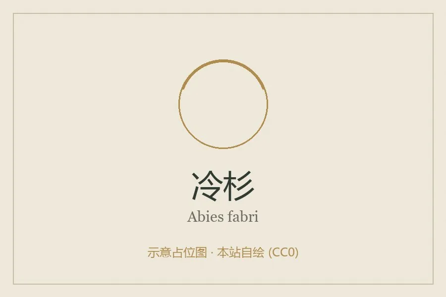

乔木 · 植物界
冷杉 Abies fabri

中国四川等地亚高山暗针叶林的主要树种，树冠尖塔形，球果直立生于枝顶，是重要的水源涵养与用材树种。
- 分类
- 门裸子植物门纲松柏纲目松柏目科松科属冷杉属
- 栖息环境
- 海拔 2500–4000 米的亚高山暗针叶林，喜冷凉湿润、多云雾环境
- 地理分布
- 中国四川、云南、西藏东南部的高山地带，为中国特有树种
- 保护级别
- 暂无评估；中国未列入国家重点保护野生植物名录
物种志
冷杉为常绿针叶乔木，高可达 40 m，树冠尖塔形，枝条轮生、平展；树皮灰褐色、呈不规则块状开裂；小枝上有圆形叶痕。针叶条形、扁平，长 1.5–3 cm，上面深绿色、下面有两条白色气孔带，先端钝或微凹。雌雄同株，球果直立生于枝顶，长 6–11 cm，成熟时暗紫色或蓝黑色，鳞片脱落后散出带翅种子。
冷杉主要分布于中国四川、云南、西藏东南部的高山地带，是亚高山暗针叶林的主要建群种，喜冷凉湿润、多云雾的环境，耐寒、耐阴，适宜酸性灰化土。木材轻软、纹理直，可供建筑、家具与造纸；树皮可提取栲胶；冷杉林对涵养水源、保持水土具有重要作用。由于分布区狭窄、更新缓慢，部分冷杉种类已被列为国家保护植物，需要加强就地保护。
形态与习性
- 株高可达 40 m，树冠尖塔形
- 针叶条形扁平，下面有 2 条白色气孔带
- 花期4–5 月，雄球花黄色
- 球果直立生于枝顶，9–10 月成熟
- 光照耐阴，幼树耐庇荫
- 水分喜湿润多雾，忌干热
- 土壤酸性灰化土
- 主要用途建筑与造纸用材、水源涵养林
趣味知识
- 冷杉的球果直立生于枝顶，成熟后鳞片脱落，与球果下垂的云杉不同。
- 冷杉针叶背面有两条白色气孔带，远看像叶背蒙了一层白霜。
- 冷杉林多分布在云雾缭绕的高山，是长江上游重要的水源涵养林。
- 冷杉耐阴，幼树能在母树林冠下生长，是典型的耐荫针叶树。